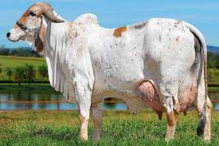

Top 2

Lo constituyen animales de cuernos cortos, con pelaje blanco o gris claro y perfil ligeramente convexo. En este grupo están las razas Bachaur, Bhagnari, Gaolao, Hariana, Krishna Valley, Nagori, Mehwati, Rath y destacando la Ongole (Nelore).